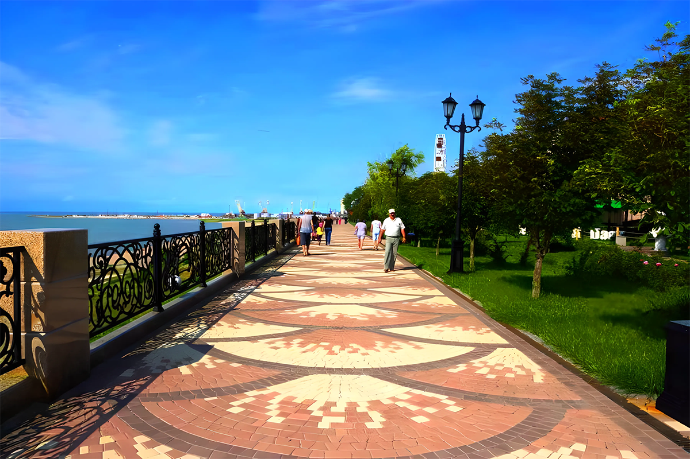
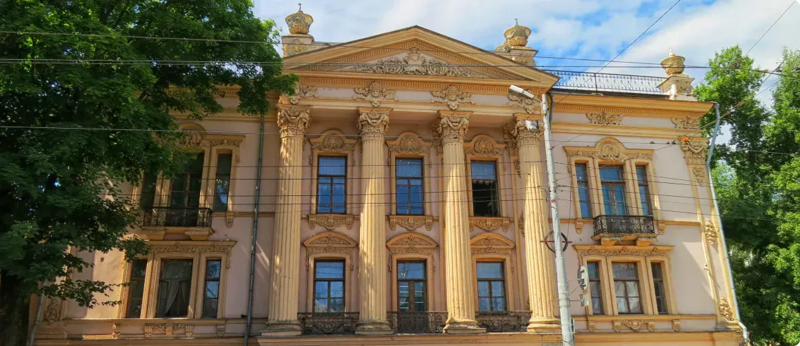
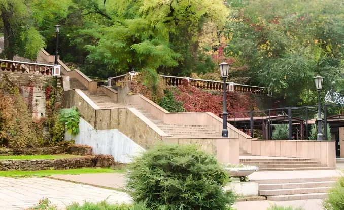
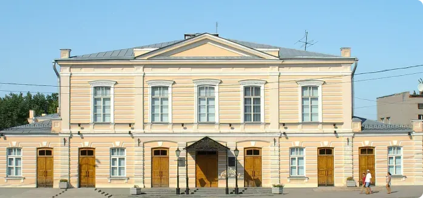
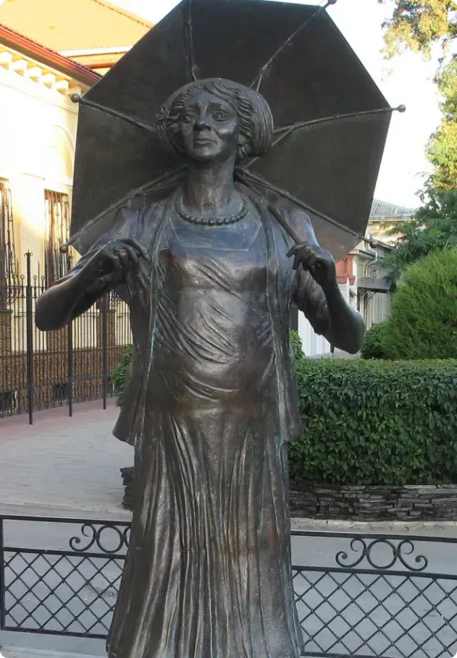
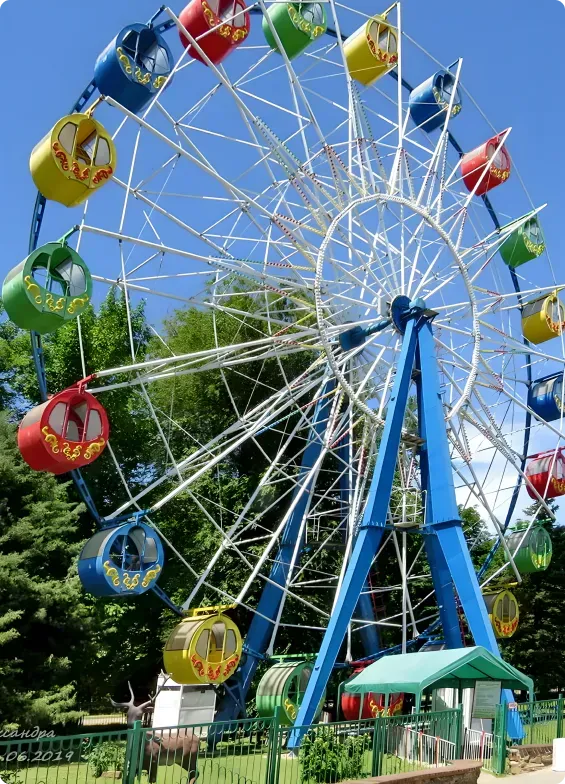

Таганрог – красивый, исторически богатый город на юге России. Он расположен в Ростовской области, на
побережье Азовского моря и Таганрогского залива. Но несмотря на географическое расположение и множество
пляжей в черте города, Таганрог сложно назвать курортом. Скорее этот город понравится любознательным
путешественникам.
История поселений на территории современного Таганрога насчитывает около 3000 лет. Этот город не напрасно
носит статус музея под открытым небом – свидетели многих эпох сохранились и дошли до наших дней в отличном
состоянии. Старый Таганрог даже получил почетное звание историко-культурного заповедника.
Посетив этот город вы сможете прогуляться по его старинным улочкам, с такими певучими именами – Греческая,
Петровская, Александровская, переулки Итальянский, Крепостной. Любуясь фасадами особняков эпохи
дореволюционной России, лестницами, видами на залив. Они отлично сохранили атмосферу старинного южного
города, которую так ценят путешественники.
Куда сходить?

Что еще обязательно надо посмотреть в Таганроге? Дворец Алфераки — самое красивое здание, возведенное в 1848 году богатым купцом Алфераки ставший одной из ярких достопримечательнстей. Построено в стиле нового барокко — стены и потолки
богато украшены лепниной, сделанной лучшими мастерами Италии, роскошная мебель ручной работы. Архитектор — известный и востребованный в то время мастер Штакеншнейдер.
Показать на карте

Депальдовская лестница — считается символом города и самым любимым местом прогулок для местных жителей и гостей, с любого участка которой открывается великолепный вид.
Лестница обязана своим появлением купцу и меценату Депальдо, этническому греку. Он выделил громадные деньги на ее строительство, и к осени 1823 года проект был готов. Сооружение длиной 113 м имеет 142 ступени, пешеходная часть выполнена из сарматского известняка.
Показать на карте

В окрестностях в мае 1980 года открыли монумент воинской Славы, он находится рядом с поселком Самбек на самой высокой точке. Посвящен защитникам этой земли — солдатам дивизий из Азербайждана. Мемориал представляет собой две бетонные стены с
фигурами воинов.
Показать на карте

Драматический театр основан в 1827 году, в труппе были крепостные актеры и музыканты, ставились пьесы Гоголя, Шекспира, Грибоедова. С 1944 года он носит имя Чехова. В репертуаре постановки для взрослых и детей, произведения классические и
современных авторов.
Показать на карте

В Таганроге установлен памятник Фаине Раневской. Бронзовая скульптура изображает Раневскую в роли Ляли из фильма «Подкидыш». Автор памятника – ростовский скульптор Давид Бегалов. Памятник установлен в Таганроге, на улице Фрунзе, перед домом, в котором прошло детство и юность актрисы.
Показать на карте

Воздвигнутый еще до революции, монумент посвящен Петру I, единственный, отлитый под руководством автора – М.М.Антокольского. Установлен в 1903 году. Высота фигуры – 3,44 м, гранитный пьедестал высотой 5, 4м. Фигура императора изображена в мундире, во весь рост, в правой руке он держит трость, в левой – шпагу.
Показать на карте

Открытый аквапарк «Лазурный» предлагает гостям города развлечения в период с конца мая до сентября ежедневно. Расположен на берегу Таганрогского залива. На территории аквакомплекса часто проводят вечерние представления и праздники, предлагаются акции. Оборудованы водные горки различной высоты — «космический полет», «гидротруба», «циклон», бассейны, зона с шезлонгами.
Показать на карте

В выходные дни местные жители с удовольствием проводят время в парке им. Горького. Отличное место отдыха с ребенком — здесь можно покататься на лошадке или пони, побродить по лабиринтам или попрыгать на батуте. Есть детская площадка, на которой проводятся конкурсы. Взрослые могут поиграть в шахматы, выпить чашечку кофе в кафе. По отзывам таганрожцев, это самое уютное и красивое место, где можно отдохнуть, развлечься, заняться спортом и сделать замечательные фото города.
Показать на карте
Экскурсии
Обзорная прогулка по достопримечательностям города и погружение в его нетривиальную историю.
Обзорная экскурсия по Таганрогу
Морской и тёплый Таганрог — торговый центр юга имперской России и родной город Антоши Чехонте, способный очаровать своими пастельными красками.
Индивидуальная обзорная экскурсия на автомобиле по Таганрогу
Не упустите возможность увидеть весь Таганрог за 3 часа!
Нескучный Чехов: авторская прогулка по Таганрогу
Отправляйтесь на экспресс-прогулку по историческому центру Таганрога! За 2,5 часа вы увидите все самое яркое, чем славится город.
Обзорная экскурсия по Таганрогу на транспорте туриста
Не упустите возможность увидеть весь Таганрог за 3 часа!
Экскурсия «Купеческий Таганрог» переносит нас в город 19 века.
Отзывы
Таганрог летом, ожидания и реальность
В июле 2021 года были с семьей в Ростовской области и решили заехать на пару дней посмотреть Таганрог. У города богатая история, его основал Петр 1, как первую военно-морскую базу в России, в нем родились известные люди А.П.Чехов и Фаина Раневская.Мы путешествовали на
машине и по пути заехали посмотреть маяк в Мержаново.
читать дальше

Я обязательно вернусь сюда. Это удивительный город со старинной атмосферой и морем.
Неделю назад я вернулась из отпуска. Мне удалось побывать в нескольких городах, 2 странах и на 2 морях и все это за 2 недели. О части из них я уже поделилась впечатлениями в предыдущих отзывах, настал черёд рассказать о Таганроге. Таганрог мы с моим молодым человеком
посетили во второй день нашего отпуска. Останавливались мы в Ростове-на-Дону, а до Таганрога добирались на автобусе от ростовского автовокзала. Путь занял около 1.5 часов.
читать дальше
Таганрог летом, ожидания и реальность
В июле 2021 года были с семьей в Ростовской области и решили заехать на пару дней посмотреть Таганрог. У города богатая история, его основал Петр 1, как первую военно-морскую базу в России, в нем родились известные люди А.П.Чехов и Фаина Раневская.Мы путешествовали на
машине и по пути заехали посмотреть маяк в Мержаново.
читать дальше
Я обязательно вернусь сюда. Это удивительный город со старинной атмосферой и морем.
Неделю назад я вернулась из отпуска. Мне удалось побывать в нескольких городах, 2 странах и на 2 морях и все это за 2 недели. О части из них я уже поделилась впечатлениями в предыдущих отзывах, настал черёд рассказать о Таганроге. Таганрог мы с моим молодым человеком
посетили во второй день нашего отпуска. Останавливались мы в Ростове-на-Дону, а до Таганрога добирались на автобусе от ростовского автовокзала. Путь занял около 1.5 часов.
читать дальше
Я обязательно вернусь сюда. Это удивительный город со старинной атмосферой и морем.
Неделю назад я вернулась из отпуска. Мне удалось побывать в нескольких городах, 2 странах и на 2 морях и все это за 2 недели. О части из них я уже поделилась впечатлениями в предыдущих отзывах, настал черёд рассказать о Таганроге. Таганрог мы с моим молодым человеком
посетили во второй день нашего отпуска. Останавливались мы в Ростове-на-Дону, а до Таганрога добирались на автобусе от ростовского автовокзала. Путь занял около 1.5 часов.
читать дальше